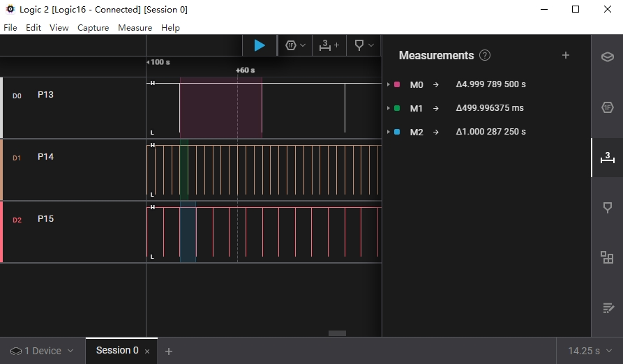
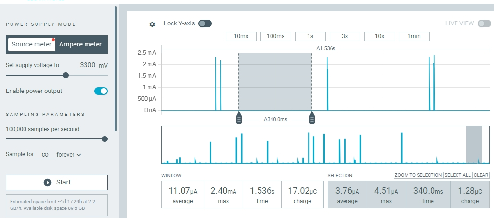

DeepSleep SleepTimer Wakeup¶
1 功能概述¶
本例程演示如何使 SoC 进入 DeepSleep 状态，然后通过 SleepTimer 定时器将其唤醒。
2 环境准备¶
硬件设备与线材：
PAN107X EVB 核心板与底板各一块
JLink 仿真器（用于烧录例程程序）
逻辑分析仪（Logic Analyzer, LA，用于观察各个 Timer 定时器超时中断的触发时间）
电流计（本文使用电流可视化测量设备 PPK2 [Nordic Power Profiler Kit II] 进行演示）
USB-TypeC 线一条（用于底板供电和查看串口打印 Log）
杜邦线数根或跳线帽数个（用于连接各个硬件设备）
硬件接线：
将 EVB 核心板插到底板上
为确保能够准确地测量 SoC 本身的功耗，排除底板外围电路的影响，请确认 EVB 底板上的：
Voltage 排针组中的 VCC 和 VDD 均接至 3V3
POWER 开关从 LDO 档位拨至 BAT 档位（并确认底板背部的电池座内没有纽扣电池）
使用 USB-TypeC 线，将 PC USB 插口与 EVB 底板 USB->UART 插口相连
使用杜邦线将 EVB 底板上的 TX 引脚接至核心板 P16，RX 引脚接至核心板 P17
使用杜邦线将 JLink 仿真器的：
SWD_CLK 引脚与 EVB 底板的 P00 排针相连
SWD_DAT 引脚与 EVB 底板的 P01 排针相连
SWD_GND 引脚与 EVB 底板的 GND 排针相连
将逻辑分析仪硬件的：
USB 接口连接至 PC USB 接口
三个通道的信号线分别连接至 EVB 底板的 P13 / P14 / P15 排针
GND 连接至 EVB 底板的 GND 排针
将 PPK2 硬件的：
USB DATA/POWER 接口连接至 PC USB 接口
VOUT 连接至 EVB 底板的 VBAT 排针
GND 连接至 EVB 底板的 GND 排针
PC 软件:
串口调试助手（UartAssist）或终端工具（SecureCRT），波特率 921600（用于接收串口打印 Log）
Logic（用于配合逻辑分析仪抓取 IO 波形）
nRF Connect Desktop（用于配合 PPK2 测量 SoC 电流）
3 编译和烧录¶
例程位置：<PAN10XX-NDK>\01_SDK\nimble\samples\low_power\deepsleep_slptmr_wakeup\keil_107x
双击 Keil Project 文件打开工程进行编译烧录，烧录成功后断开 JLink 连线。
4 例程演示说明¶
PC 上打开 PPK2 Power Profiler 软件，供电电压选择 3300 mV，然后打开供电开关
从串口工具中看到如下的打印信息：
Try to load HW calibration data.. DONE. - Chip Info : 0x1 - Chip CP Version : 255 - Chip FT Version : 7 - Chip MAC Address : E110000052E3 - Chip UID : 060300465454455354 - Chip Flash UID : 4250315A3538380B00CE12435603C678 - Chip Flash Size : 512 KB [I] App started.. [I] [Uptime: 80 ms] Main Thread sleep.. [I] [Uptime: 581 ms] SleepTimer 1 IRQ triggered. [I] [Uptime: 1081 ms] SleepTimer 1 IRQ triggered. [I] [Uptime: 1082 ms] SleepTimer 2 IRQ triggered. [I] [Uptime: 1581 ms] SleepTimer 1 IRQ triggered. [I] [Uptime: 2081 ms] SleepTimer 1 IRQ triggered. [I] [Uptime: 2082 ms] SleepTimer 2 IRQ triggered. [I] [Uptime: 2581 ms] SleepTimer 1 IRQ triggered. [I] [Uptime: 3081 ms] SleepTimer 1 IRQ triggered. [I] [Uptime: 3082 ms] SleepTimer 2 IRQ triggered. [I] [Uptime: 3581 ms] SleepTimer 1 IRQ triggered. [I] [Uptime: 4081 ms] SleepTimer 1 IRQ triggered. [I] [Uptime: 4082 ms] SleepTimer 2 IRQ triggered. [I] [Uptime: 4581 ms] SleepTimer 1 IRQ triggered. [I] [Uptime: 5080 ms] Main Thread waked up. [I] [Uptime: 5081 ms] SleepTimer 1 IRQ triggered. [I] [Uptime: 5081 ms] SleepTimer 2 IRQ triggered. [I] [Uptime: 5083 ms] Main Thread sleep.. [I] [Uptime: 5581 ms] SleepTimer 1 IRQ triggered. [I] [Uptime: 6081 ms] SleepTimer 1 IRQ triggered. [I] [Uptime: 6082 ms] SleepTimer 2 IRQ triggered. ...
由 Log 中的时间戳可以看出，每隔 500ms 触发 SleepTimer 1 中断，每隔 1s 触发 SleepTimer 2 中断，每隔 5s 触发 Main Task 调度。
观察逻辑分析仪波形，发现芯片 P13 引脚每隔 5s 左右拉低一次；P14 引脚每隔 500ms 左右拉低一次； P15 引脚每隔 1s 左右拉低一次：

使用逻辑分析仪抓取 GPIO 波形¶
P13 引脚指示 Main Task 执行时刻，P14 引脚只是 SleeTimer 1 中断触发时刻，P15 引脚只是 SleeTimer 2 中断触发时刻，可见它们与 Log 中的时间戳正好对应。
将逻辑分析仪从芯片上断开（避免影响电流观测），再观察芯片电流波形：

使用电流计抓取电流波形¶
可见芯片低功耗底电流为 4uA 左右，并且每隔一段时间芯片被某个 SleepTimer 定时器从 DeepSleep 状态下唤醒。
5 开发者说明¶
5.1 SDK Config 配置¶
与本例程相关的 SDK Config (sdk_config.h) 配置有：
SoC Platform : Chip Power Mode
芯片供电选择 DCDC 模式，以降低芯片动态功耗
对应宏配置
CONFIG_SOC_DCDC_PAN1070 = 1
Power Management : Enable Low Power Mode
使能系统低功耗功能
对应宏配置
CONFIG_PM = 1
Log & Debug Config : Enable App Log
使能 App Log 功能
对应宏配置
APP_LOG_EN = 1
Log & Debug Config : Enable App Log : Log to UART
将 App Log 输出至串口
对应宏配置
CONFIG_UART_LOG_ENABLE = 1
5.2 程序代码¶
5.2.1 主程序¶
本例程中，OS 为使能状态，因此主程序 main() 函数也是 OS Main Task 的入口函数，其内容如下：
int main(void)
{
/* Application initialization */
app_setup();
/* Application main infinite loop */
app_main_loop();
return 0;
}
5.2.2 App Setup 初始化¶
App 初始化 app_setup() 函数内容如下：
void app_setup(void)
{
APP_LOG_INFO("App started..\n\n");
/* Init specific GPIO as output for ISR indication use */
indication_gpio_init();
/* Init Sleep Timers for wake up use */
slptmr_init();
}
打印 App 初始化 Log
在 indication_gpio_init() 函数中初始化 GPIO，用于指示各个 SleepTimer 唤醒时刻
在 slptmr_init() 函数中初始化 SleepTimer 1/2 的配置
5.2.3 App Main Task Loop 任务循环¶
App Main Task 循环 app_main_loop() 函数内容如下：
void app_main_loop(void)
{
while (1) {
APP_LOG_INFO("[Uptime: %d ms] Main Thread sleep..\n", soc_lptmr_uptime_get_ms());
/* Set OS Task Delay (Affects timeout of SleepTimer 0 */
vTaskDelay(pdMS_TO_TICKS(5000));
HAL_GPIO_WritePin(P1_3, HAL_GPIO_LEVEL_LOW);
HAL_GPIO_WritePin(P1_3, HAL_GPIO_LEVEL_HIGH);
APP_LOG_INFO("[Uptime: %d ms] Main Thread waked up.\n", soc_lptmr_uptime_get_ms());
}
}
在 while (1) 主循环打印当前 Task 的睡眠唤醒 Log
通过
vTaskDelay()OS 接口触发系统进出 DeepSleep 状态注：通过此方式进入低功耗，实际上 OS 内部使用的是 SleepTimer 0 进行定时
5.2.4 Indication GPIO 初始化程序¶
Indication GPIO 初始化程序 indication_gpio_init() 函数内容如下：
static void indication_gpio_init(void)
{
/* Set pinmux func of P13/P14/P15 as GPIO */
SYS_SET_MFP(P1, 3, GPIO);
SYS_SET_MFP(P1, 4, GPIO);
SYS_SET_MFP(P1, 5, GPIO);
/* Configure GPIO P13/P14/P15 to push-pull output mode (with init high level) */
HAL_GPIO_InitTypeDef GPIO_InitStruct = {
.mode = HAL_GPIO_MODE_OUTPUT_PUSHPULL,
.level = HAL_GPIO_LEVEL_HIGH,
};
HAL_GPIO_Init(P1_3, &GPIO_InitStruct);
HAL_GPIO_Init(P1_4, &GPIO_InitStruct);
HAL_GPIO_Init(P1_5, &GPIO_InitStruct);
}
使用 HAL GPIO Driver 对 GPIO 进行配置
分别将 P13/P14/P15 等三个引脚配置为 GPIO 推挽输出模式（初始输出高电平）
5.2.5 SleepTimer 初始化程序¶
SleepTimer 1/2 初始化程序 slptmr_init() 函数内容如下：
static void slptmr_init(void)
{
/* Configure timeout of SleepTimer 1&2 with interrupt and wakeup enabled */
/*
* Configure timeout:
* timeout1 = SLPTMR1_TIMEOUT_CNT / PAN_RCC_CLOCK_FREQUENCY_SLOW
* = (32000 / 2) / 32000 (s)
* = 0.5 s = 500 ms
* timeout2 = SLPTMR2_TIMEOUT_CNT / PAN_RCC_CLOCK_FREQUENCY_SLOW
* = 32000 / 32000 (s)
* = 1 s
*/
const uint32_t SLPTMR1_TIMEOUT_CNT = soc_32k_clock_freq_get() / 2;
const uint32_t SLPTMR2_TIMEOUT_CNT = soc_32k_clock_freq_get();
/* Set timeout of SleepTimer 1 */
LP_SetSleepTime(ANA, SLPTMR1_TIMEOUT_CNT, LP_SLPTMR_CH1);
/* Set timeout of SleepTimer 2 */
LP_SetSleepTime(ANA, SLPTMR2_TIMEOUT_CNT, LP_SLPTMR_CH2);
}
此函数功能是：
将 SleepTimer 1 超时时间配置为 500ms
将 SleepTimer 2 超时时间配置为 1s
配置时间的具体公式计算请参考代码注释
5.2.6 SleepTimer 1/2 中断服务回调函数¶
SleepTimer 1/2 的中断服务回调函数分别如下：
/* This function overrides the reserved weak function with same name in soc_pm.c */
void sleep_timer1_handler(void)
{
HAL_GPIO_WritePin(P1_4, HAL_GPIO_LEVEL_LOW);
HAL_GPIO_WritePin(P1_4, HAL_GPIO_LEVEL_HIGH);
APP_LOG_INFO("[Uptime: %d ms] SleepTimer 1 IRQ triggered.\n", soc_lptmr_uptime_get_ms());
}
/* This function overrides the reserved weak function with same name in soc_pm.c */
void sleep_timer2_handler(void)
{
HAL_GPIO_WritePin(P1_5, HAL_GPIO_LEVEL_LOW);
HAL_GPIO_WritePin(P1_5, HAL_GPIO_LEVEL_HIGH);
APP_LOG_INFO("[Uptime: %d ms] SleepTimer 2 IRQ triggered.\n", soc_lptmr_uptime_get_ms());
}
芯片共有 3 个 SleepTimer，分别为 SleepTimer 0、SleepTimer 1 和 SleepTimer 2，它们共用一个中断服务函数
SLPTMR_IRQHandler()，此函数是在 soc.c 中实现的；其中 SleepTimer0 被用作 OS Tick，因此在 App 层只可通过回调函数使用 SleepTimer 1 和 SleepTimer 2在 App 中实现
sleep_timer1_handler()和sleep_timer2_handler()两个中断回调函数，在其中拉 Indication IO 并打印 Log；当对应 SleepTimer 定时超时后，即可唤醒系统并执行回调函数中的代码
5.2.7 与低功耗相关的 Hook 函数¶
本例程还用到了 2 个与低功耗密切相关的 Hook 函数：
CONFIG_RAM_CODE void vSocDeepSleepEnterHook(void)
{
#if CONFIG_UART_LOG_ENABLE
reset_uart_io();
#endif
}
CONFIG_RAM_CODE void vSocDeepSleepExitHook(void)
{
#if CONFIG_UART_LOG_ENABLE
set_uart_io();
#endif
}
上述两个 Hook 函数用于在进入 DeepSleep 前和从 DeepSleep 唤醒后做一些额外操作，如关闭和重新配置 IO 为串口功能，以防止 DeepSleep 状态下 IO 漏电
详细解释请参考 DeepSleep GPIO Key Wakeup 例程中的相关介绍